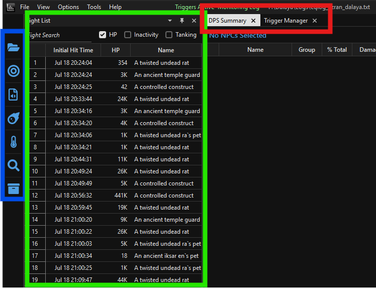
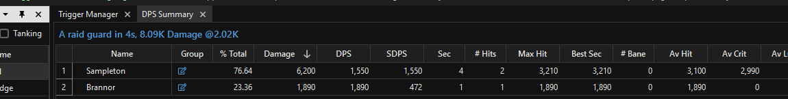

Navigating the main window and reading your combat data.
After loading a log file, the main window has three main areas:

The parser groups combat events into fights automatically. A new fight begins when damage is first recorded against a named NPC, and the fight ends after combat activity stops. Each fight appears in the fight list with the NPC's name.
Unnamed adds or pets that deal or receive damage during a named encounter are included in that encounter's totals. If damage happens outside any named encounter — such as during a pull or against trash with no distinct name — it may appear under a generic entry.
To clear out old fights and start fresh, right-click anywhere in the fight list and choose Clear All. This empties the fight list without closing the log file, so monitoring continues uninterrupted.
Click the folder icon at the top of the sidebar (or File → Open and Monitor Log File — both open the same menu) and pick how far back to read: Now for live tailing only, or one of the time-range options up to Everything to also load fights that already happened. Either way, the parser keeps watching the file for new lines afterward — there's no separate "monitor" vs. "one-time read" mode.
Click a fight in the fight list to view its stats. The content tabs update immediately. To view aggregated stats across multiple fights:
When multiple fights are selected, all tabs show combined totals for that set.
The Damage tab shows a summary table with one row per player (and per pet, if unassigned). Common columns include:
Click any column header to sort by that column.

Right-click any player row for a context menu with several per-player views: DPS Breakdown (damage by spell/ability), Spell Counts (cast counts), Hit Frequency, DPS Log, and Death Log (their deaths during the selected fight(s), with the last several hits before each one). Each opens its own detail window.
A few other views live under View → Events rather than as their own content tab: Looted Items (items seen in loot messages), Random Rolls, and Misc Events.
Pets appear as their own rows in the DPS Summary until their owner is known. The parser learns ownership three ways, in priority order:
Once ownership is established, the pet's damage is folded into the owner's row and the pet appears as a sub-entry beneath them.
Dalaya's named pets are detected automatically by this fork and are never auto-assigned to your character name in raid logs. Ownership still needs to be confirmed via one of the three methods above.